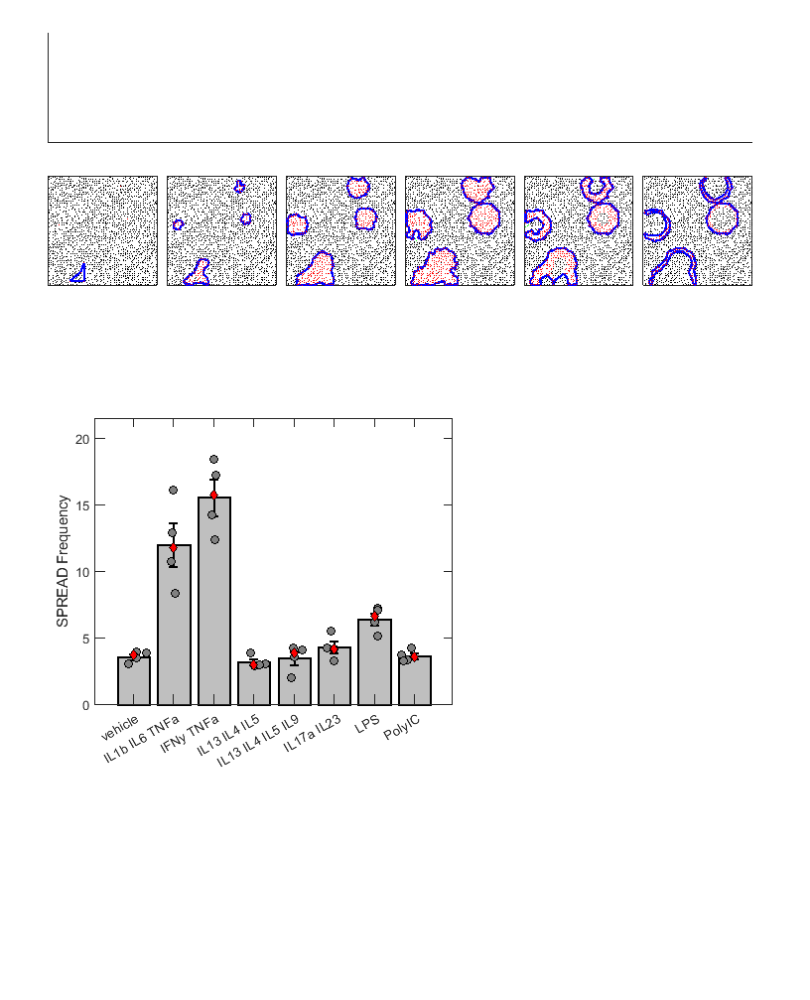

Contents
Figure 2 - HBE1 SPREADs Pro-Inflammatory Treatments
Showing cytokine-induced spreads in HBE1 cells, demonstrating our matlab port or ARCOS works amazingly at detecting synthetic SPREADs, then measuring the SPREAD frequency in HBE1 cells in response to controls, bulk and single pro-inflammatory cytokines.
% add the paths addpath('Z:\Code\Nick','Z:\Code\Cell Trace','Z:\Code\Image Analysis','Z:\Code\ARCOS-MATLAB\Source')
Figure 2A - Example timelapse images of SPREADs
Movie is pulled from 2022-07-28 HBE1 experiment, cells were treated with IL1b. The movie these images are pulled from is also Sup Video 2.
Figure 2B - Example SPREAD Detection and tracking
Generate synthetic spreads, then put them through arcos to see how well arcos can identify and track them.
[~,x,y,~,~] = arcos_utils.gensynthV2(); %Generate x and y coords % set the seed seed = mean(double(evalc('disp("Daniel Oberbauer")'))); rng(seed); r = -0.5 + (0.5+0.5)*rand(3600,1); % Generate noise matrix nx = x+r*10; %Inject noise into XCoords; ny = y+r*10; %Inject noise into YCoords; idx = randi(3600,2000,1); %Get vector of random indices to remove from dataset to create holes. nx(idx,:) = []; ny(idx,:) = []; d{1}.data.XCoord = nx; d{1}.data.YCoord = ny; bin = arcos_utils.gensynth(d,1,'seed',"Daniel Oberbauer"); %Generate synthetic spreads using the given data [clust_by_time,clust_by_id,bin,~,~] = arcos(d,1,"EKAR",'bin',bin); %Use ARCOS to detect synthetic spreads clust_by_id = arcos_analysis.analyze(clust_by_id,d); %Perform ARCOS analysis to get bounds
Warning: Colon operands must be real scalars. This warning will become an error in a future release. Warning: Colon operands must be real scalars. This warning will become an error in a future release. Warning: Colon operands must be real scalars. This warning will become an error in a future release. Warning: Colon operands must be real scalars. This warning will become an error in a future release. Warning: Colon operands must be real scalars. This warning will become an error in a future release. Warning: Colon operands must be real scalars. This warning will become an error in a future release. Warning: Colon operands must be real scalars. This warning will become an error in a future release. Warning: Colon operands must be real scalars. This warning will become an error in a future release. Warning: Colon operands must be real scalars. This warning will become an error in a future release. Warning: Colon operands must be real scalars. This warning will become an error in a future release. Warning: Colon operands must be real scalars. This warning will become an error in a future release. Warning: Colon operands must be real scalars. This warning will become an error in a future release. Warning: Colon operands must be real scalars. This warning will become an error in a future release. Warning: Colon operands must be real scalars. This warning will become an error in a future release. Warning: Colon operands must be real scalars. This warning will become an error in a future release. Warning: Colon operands must be real scalars. This warning will become an error in a future release. Warning: Colon operands must be real scalars. This warning will become an error in a future release. Warning: Colon operands must be real scalars. This warning will become an error in a future release. Warning: Colon operands must be real scalars. This warning will become an error in a future release. Warning: Colon operands must be real scalars. This warning will become an error in a future release. Warning: Colon operands must be real scalars. This warning will become an error in a future release. Warning: Colon operands must be real scalars. This warning will become an error in a future release. Warning: Colon operands must be real scalars. This warning will become an error in a future release. Warning: Colon operands must be real scalars. This warning will become an error in a future release. Warning: Colon operands must be real scalars. This warning will become an error in a future release. Warning: Colon operands must be real scalars. This warning will become an error in a future release. Warning: Colon operands must be real scalars. This warning will become an error in a future release. Warning: Colon operands must be real scalars. This warning will become an error in a future release. Warning: Colon operands must be real scalars. This warning will become an error in a future release. Warning: Colon operands must be real scalars. This warning will become an error in a future release. Warning: Colon operands must be real scalars. This warning will become an error in a future release. Warning: Colon operands must be real scalars. This warning will become an error in a future release. Warning: Colon operands must be real scalars. This warning will become an error in a future release. Warning: Colon operands must be real scalars. This warning will become an error in a future release. Warning: Colon operands must be real scalars. This warning will become an error in a future release. Warning: Colon operands must be real scalars. This warning will become an error in a future release. Warning: Colon operands must be real scalars. This warning will become an error in a future release. Warning: Colon operands must be real scalars. This warning will become an error in a future release. Warning: Colon operands must be real scalars. This warning will become an error in a future release. Warning: Colon operands must be real scalars. This warning will become an error in a future release. Warning: Colon operands must be real scalars. This warning will become an error in a future release. Warning: Colon operands must be real scalars. This warning will become an error in a future release. Warning: Colon operands must be real scalars. This warning will become an error in a future release. Warning: Colon operands must be real scalars. This warning will become an error in a future release. Warning: Colon operands must be real scalars. This warning will become an error in a future release. Warning: Colon operands must be real scalars. This warning will become an error in a future release. Warning: Colon operands must be real scalars. This warning will become an error in a future release. Warning: Colon operands must be real scalars. This warning will become an error in a future release. Warning: Colon operands must be real scalars. This warning will become an error in a future release. Warning: Colon operands must be real scalars. This warning will become an error in a future release. Warning: Colon operands must be real scalars. This warning will become an error in a future release. Warning: Colon operands must be real scalars. This warning will become an error in a future release. Warning: Colon operands must be real scalars. This warning will become an error in a future release. Warning: Colon operands must be real scalars. This warning will become an error in a future release. Warning: Colon operands must be real scalars. This warning will become an error in a future release. Warning: Colon operands must be real scalars. This warning will become an error in a future release. Warning: Colon operands must be real scalars. This warning will become an error in a future release. Warning: Colon operands must be real scalars. This warning will become an error in a future release. Warning: Colon operands must be real scalars. This warning will become an error in a future release. Warning: Colon operands must be real scalars. This warning will become an error in a future release. Warning: Colon operands must be real scalars. This warning will become an error in a future release. Warning: Colon operands must be real scalars. This warning will become an error in a future release. Warning: Colon operands must be real scalars. This warning will become an error in a future release. Warning: Colon operands must be real scalars. This warning will become an error in a future release. Warning: Colon operands must be real scalars. This warning will become an error in a future release. Warning: Colon operands must be real scalars. This warning will become an error in a future release. Warning: Colon operands must be real scalars. This warning will become an error in a future release. Warning: Colon operands must be real scalars. This warning will become an error in a future release. Warning: Colon operands must be real scalars. This warning will become an error in a future release. Warning: Colon operands must be real scalars. This warning will become an error in a future release. Warning: Colon operands must be real scalars. This warning will become an error in a future release. Warning: Colon operands must be real scalars. This warning will become an error in a future release. Warning: Colon operands must be real scalars. This warning will become an error in a future release. Warning: Colon operands must be real scalars. This warning will become an error in a future release. Warning: Colon operands must be real scalars. This warning will become an error in a future release. Warning: Colon operands must be real scalars. This warning will become an error in a future release. Warning: Colon operands must be real scalars. This warning will become an error in a future release. Warning: Colon operands must be real scalars. This warning will become an error in a future release. Warning: Colon operands must be real scalars. This warning will become an error in a future release. Warning: Colon operands must be real scalars. This warning will become an error in a future release. Warning: Colon operands must be real scalars. This warning will become an error in a future release. Warning: Colon operands must be real scalars. This warning will become an error in a future release. Warning: Colon operands must be real scalars. This warning will become an error in a future release. Warning: Colon operands must be real scalars. This warning will become an error in a future release. Warning: Colon operands must be real scalars. This warning will become an error in a future release. Warning: Colon operands must be real scalars. This warning will become an error in a future release. Warning: Colon operands must be real scalars. This warning will become an error in a future release. Warning: Colon operands must be real scalars. This warning will become an error in a future release. Warning: Colon operands must be real scalars. This warning will become an error in a future release. Warning: Colon operands must be real scalars. This warning will become an error in a future release.
Figure 2C - Get the bulk cytokine SPREAD frequency
basePath = 'Z:\Processed Data\SPREADs\'; % 2020-11-30 HBE1 experiment will be used for this plot fig2C = {[basePath,'2020-11-30 HBE1 AMPKAR ERKTR Cytokine Array Stat test\2020-11-30 HBE1 AMPKAR ERKTR Cytokine Array Stat test_Processed_Copy.mat']}; data2C = convertSPREADToDataframe2(fig2C, 'ERKTR', 'tmaxaftertx',24,'exclude',{'IL620n','TNFa20n','Simvastatin','EGF'}); data2Ca = data2C; data2Ca.txinfo = strrep(data2Ca.txinfo,'1 fim ',''); data2Ca.txinfo = strrep(data2Ca.txinfo,'1 fim ',''); data2Ca.txinfo = strrep(data2Ca.txinfo, '10ng/mL ',''); data2Ca.txinfo = strrep(data2Ca.txinfo, '20ug/mL ',''); data2Ca.txinfo = strrep(data2Ca.txinfo, '1 v','v'); % txOrder = {'1 vehicle', '20ug/mL LPS', '20ug/mL PolyIC', '10ng/mL IL13 10ng/mL IL4 10ng/mL IL5', '10ng/mL IL13 10ng/mL IL4 10ng/mL IL5 10ng/mL IL9', '10ng/mL IL17a 10ng/mL IL23', '10ng/mL IFNy 10ng/mL TNFa', '10ng/mL IL1b 10ng/mL IL6 10ng/mL TNFa'}; % put them in order txOrder = {'vehicle', 'IL1b IL6 TNFa', 'IFNy TNFa', 'IL13 IL4 IL5', 'IL13 IL4 IL5 IL9', 'IL17a IL23', 'LPS', 'PolyIC'}; data2Ca.exptx = categorical(data2Ca.txinfo,txOrder); % get the statistics for plotting barHold = grpstats(data2Ca,"exptx",["mean","median","sem"],"DataVars","freq"); barHold.exptx = categorical(barHold.exptx,txOrder) % See which are significantly different versus control (vehicle) [~,~,stats] = anova1(data2Ca.freq,data2Ca.exptx,'off'); [resultsC,~,~,gnamesC] = multcompare(stats,"CriticalValueType","dunnett",'ControlGroup',find(contains(stats.gnames,'vehicle')),'Display','off'); resultsTblC = array2table(resultsC,"VariableNames", ["Group","Control Group","Lower Limit","Difference","Upper Limit","P-value"]); resultsTblC.("Group") = gnamesC(resultsTblC.("Group")); resultsTblC.("Control Group") = gnamesC(resultsTblC.("Control Group"))
barHold =
8×5 table
exptx GroupCount mean_freq median_freq sem_freq
________________ __________ _________ ___________ ________
vehicle vehicle 4 3.567 3.674 0.21203
IL1b IL6 TNFa IL1b IL6 TNFa 4 11.985 11.771 1.6369
IFNy TNFa IFNy TNFa 4 15.534 15.695 1.3837
IL13 IL4 IL5 IL13 IL4 IL5 4 3.1568 2.9606 0.23367
IL13 IL4 IL5 IL9 IL13 IL4 IL5 IL9 4 3.46 3.8166 0.50654
IL17a IL23 IL17a IL23 4 4.2804 4.1733 0.45586
LPS LPS 4 6.3849 6.5989 0.479
PolyIC PolyIC 4 3.6205 3.5313 0.22252
resultsTblC =
7×6 table
Group Control Group Lower Limit Difference Upper Limit P-value
____________________ _____________ ___________ __________ ___________ __________
{'IL1b IL6 TNFa' } {'vehicle'} 5.1371 8.418 11.699 1.1934e-06
{'IFNy TNFa' } {'vehicle'} 8.6862 11.967 15.248 3.7559e-10
{'IL13 IL4 IL5' } {'vehicle'} -3.6911 -0.4102 2.8707 0.99944
{'IL13 IL4 IL5 IL9'} {'vehicle'} -3.3879 -0.10701 3.1739 1
{'IL17a IL23' } {'vehicle'} -2.5675 0.71339 3.9943 0.98476
{'LPS' } {'vehicle'} -0.46302 2.8179 6.0988 0.11365
{'PolyIC' } {'vehicle'} -3.2274 0.053504 3.3344 1
Make Figure 2 - Cytokine-induced SPREADs in HBE1 cells
% make figure 2 fig2 = figure; % set up the subplot handles ax = axes; % standardize the figure for printing fontname(fig2,"Arial"); fontsize(fig2,8,"points") % make the font 8 pt and arial fig2.Units = "inches"; % make it inches fig2.Position = [0.05,0.05,8.5,11]; % put it on a page % Figure 2A - leave empty space for SPREAD images ah = subplot(4,6,1:6); ax(1) = ah; % append the axis handle xticklabels({''}); yticklabels({''}); % Figure 2B - Plot the Synthetic SPREADs that have been identified and tracked via ARCOS for iplot = 1:6 ah = subplot(4,6,iplot+6); ax(iplot+1) = ah; arcos_plot.plot(clust_by_time,clust_by_id,bin,d,1,iplot,'handle',ah,'close',false,'outpath',[],'markersize',2) %Plot the spreads. xticks([]); xticklabels({''}); yticks([]); yticklabels({''}); title(''); % clean up the axis labels and title end % Figure 2C - Plot the bulk cytokine SPREAD frequency ah = subplot(4,6,[13:16,19:22]); ax(8) = ah; bar(barHold.exptx,barHold.mean_freq,... % plot the mean spread duration 'FaceColor',[0.75,0.75,0.75],... 'EdgeColor','k', 'LineWidth',1.5); hold on; ylabel('SPREAD Frequency'); errorbar(barHold.exptx,barHold.mean_freq,barHold.sem_freq,'.','vertical','Color','k','LineWidth', 1.5,'MarkerSize', 1); % plot SEM swarmchart(data2Ca.exptx,data2Ca.freq,'XJitter','density','YJitter','none','MarkerEdgeColor','k','MarkerFaceColor',[0.5,0.5,0.5]) % ,'MarkerFaceColor','b' % raw data plot(barHold.exptx,barHold.median_freq,'d','MarkerFaceColor','r','MarkerEdgeColor','k') % ,'MarkerFaceColor','b' % plot median ylim([0,21.5]); hold off; % standardize the subplots ax.set('Units','Inches') % make the subplots inches % assign their positions ax(1).InnerPosition = [0.5,9,7.4,1.15]; % For Figure 2A (to be filled in later in affinity with images of cells) set(ax(1),'TickLength',[0, 0]); % set the tick length % for all of the synthetic arcos data (Figure 2B) sizeP = 1.15; % each subplot in inches bufferP = 0.1; % space btwn each one for iSub = 2:7 ax(iSub).InnerPosition = [0.5+((iSub-2)*sizeP)+(bufferP*(iSub-2)),7.5,sizeP,sizeP]; end % For the grouped cytokine data (Figure 2C) ax(8).InnerPosition = [1,3.1,3.75,3]; set(ax(8),'TickLength',[0.025, 0.05],'LineWidth',1); % set the tick length % For the single cytokine data (Figure 2D) % ax(9).Position = [0.5,0.5,5.5,6]; % save the figures saveas(gcf,'Z:\imageData\SPREADs\Plotting_Code\Figure_Outputs\F2_HBE1_SPREADs.fig') saveas(gcf,'Z:\imageData\SPREADs\Plotting_Code\Figure_Outputs\F2_HBE1_SPREADs.svg')
Warning: Do not close the figure until the process has finished Warning: Do not close the figure until the process has finished Warning: Do not close the figure until the process has finished Warning: Do not close the figure until the process has finished Warning: Do not close the figure until the process has finished Warning: Do not close the figure until the process has finished
Figure Legend
Figure 2: Spatially localized ERK activity in HBE1 cells in response to pro-inflammatory ligands. (A) Time lapse images showing an example ERK activity wave (SPREAD) occurring in HBE1 cells. The dashed white line indicates the edge of a SPREAD event, and the white arrows represent the direction of SPREAD growth or shrinkage. Time 0 indicates the initiation point of the example SPREAD, approximately 16 hours after treatment with 10 ng/mL IL-1β. (B) SPREAD detection results on simulated ERK activity data. Red dots represent active cells identified to be part of a SPREAD. Blue solid lines show the boundary of detected SPREADs. Black dots represent inactive cells. Green dots show cells that are considered to have active ERK, but are not a part of a detected SPREAD. (C and D) SPREAD frequency (SPREAD occurrences per hour, normalized to mm2) in the 24 hours following treatment with the indicated stimuli. Gray dots represent technical replicates, red diamonds show the median, and error bars show S.E.M. Red asterisks and lines indicate conditions where SPREAD frequency is significantly different compared to the control group (P < 0.005), calculated using 1-way ANOVA compared to the control and adjusted for multiple comparisons via the Dunnett's procedure.